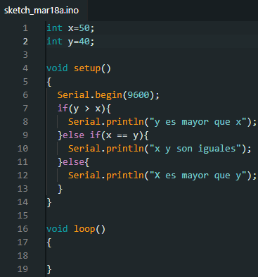
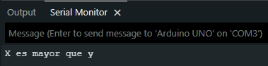
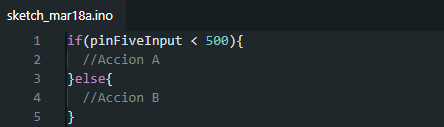
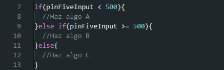

Estructuras De Control


If/Else
La estructura `if/else` permite un mayor control sobre el flujo del código que la estructura `if` básica, al permitir agrupar múltiples pruebas. Por ejemplo, se podría probar una entrada analógica y ejecutar una acción si la entrada es menor que 500, y otra acción si la entrada es igual o mayor a 500. El código se vería así:
`else` puede preceder a otra prueba `if`, de modo que se pueden ejecutar varias pruebas mutuamente excluyentes simultáneamente.
Cada prueba continúa con la siguiente hasta que se encuentra una verdadera. Cuando se encuentra una prueba verdadera, se ejecuta su bloque de código asociado y el programa salta a la línea que sigue a toda la estructura `if/else`. Si ninguna prueba resulta verdadera, se ejecuta el bloque `else` predeterminado, si existe, y se establece el comportamiento predeterminado.
Cabe destacar que el bloque `else if` se puede usar con o sin un bloque `else` de terminación, y viceversa. Se permite un número ilimitado de bifurcaciones `else if`.
